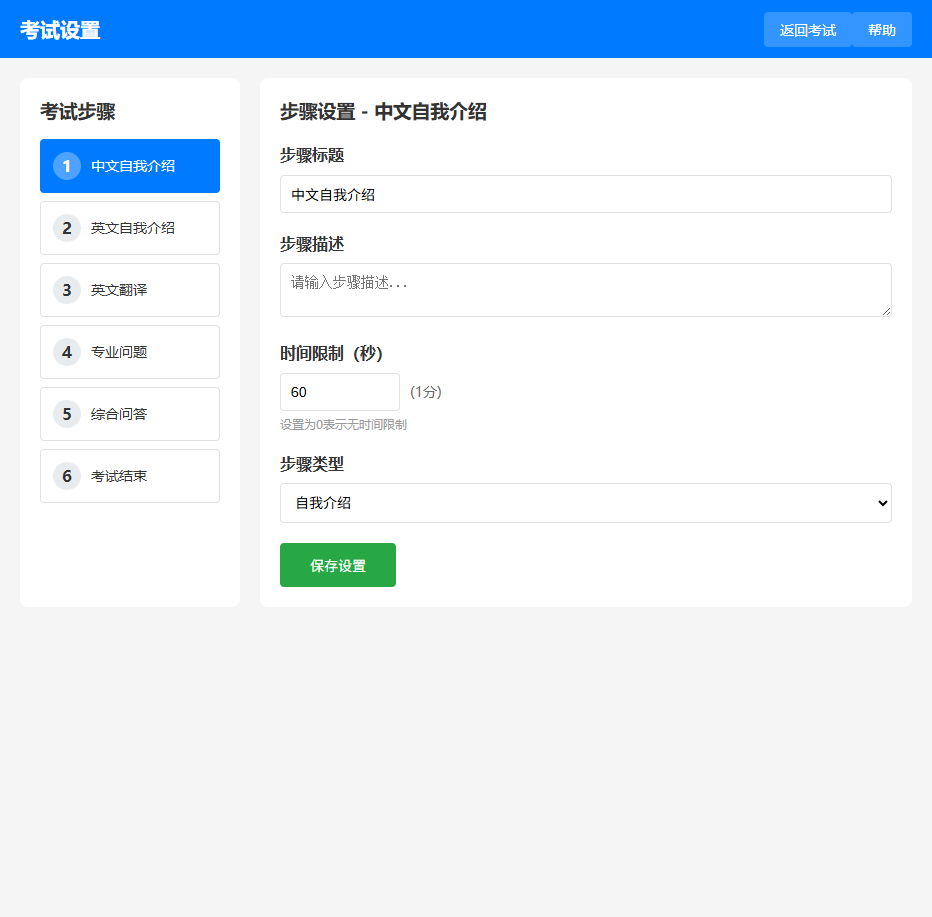

步骤内容设置帮助文档
研究生复试流程控制系统 · Step Content Settings Guide
内容管理说明

图 1：步骤内容设置主界面
功能概述
步骤内容设置是考试系统的核心配置功能，用于管理每个考试步骤的指导内容和说明信息，为考生和考官提供清晰的操作指引。
- 步骤内容管理：为每个考试步骤设置专门的指导内容
- 多内容支持：每个步骤可以包含多个内容块
- 实时编辑：支持在线编辑和即时保存
- 状态管理：控制内容的启用/禁用状态
- 时间追踪：记录内容的创建和更新时间
界面布局
- 顶部导航：页面标题和快捷链接
- 左侧步骤列表：显示所有考试步骤，点击选择
- 右侧内容编辑区：显示选中步骤的内容管理界面
- 内容列表：显示当前步骤的所有内容块
- 操作按钮：编辑、删除、添加等功能按钮
步骤选择
如何选择考试步骤
- 在左侧步骤列表中点击要编辑的步骤
- 右侧会显示该步骤的所有内容
- 如果步骤没有内容，会显示"请选择一个步骤"提示
系统预设步骤
| 步骤 | 名称 | 默认时长 | 内容用途 |
|---|---|---|---|
| 步骤 1 | 中文自我介绍 | 2 分钟 | 中文自我介绍指导 |
| 步骤 2 | 英文自我介绍 | 3 分钟 | 英文自我介绍指导 |
| 步骤 3 | 英文翻译 | 4 分钟 | 翻译题目说明 |
| 步骤 4 | 专业问题 | 5 分钟 | 专业题目指导 |
| 步骤 5 | 综合问答 | 9 分钟 | 综合问答说明 |
注意：每个步骤都可以设置多个内容块，系统会按顺序显示这些内容。
内容块编辑
添加新内容
- 选择要添加内容的步骤
- 点击"添加新内容"按钮
- 在弹出的编辑框中输入内容文本
- 设置内容的启用状态
- 点击保存完成添加
编辑现有内容
- 在内容列表中找到要编辑的内容
- 点击"编辑"按钮
- 在编辑框中修改内容文本
- 调整启用/禁用状态（如需要）
- 保存更改
删除内容
注意：删除操作不可恢复，请谨慎操作。
- 点击内容旁的"删除"按钮
- 系统会弹出确认对话框
- 确认删除后，内容将永久移除
内容块结构
- 内容标识：每个内容块有唯一的标识符
- 内容文本：显示给考生和考官的指导信息
- 启用状态：控制内容是否在考试中显示
- 时间戳：记录内容的最后更新时间
启用/禁用控制
状态说明
- 已启用：内容正常显示，考试时会显示此内容
- 已禁用：内容暂时隐藏，考试时不会显示此内容
使用建议：可以通过禁用某些内容块来临时隐藏特定指导信息，而不必删除内容。这样在需要时可以重新启用，方便内容的灵活管理。
管理建议
- 定期更新：根据考试要求定期更新指导内容
- 版本控制：重要修改前备份原有内容
- 测试验证：修改后在实际考试前进行测试
- 反馈收集：收集考官和考生的反馈，持续改进